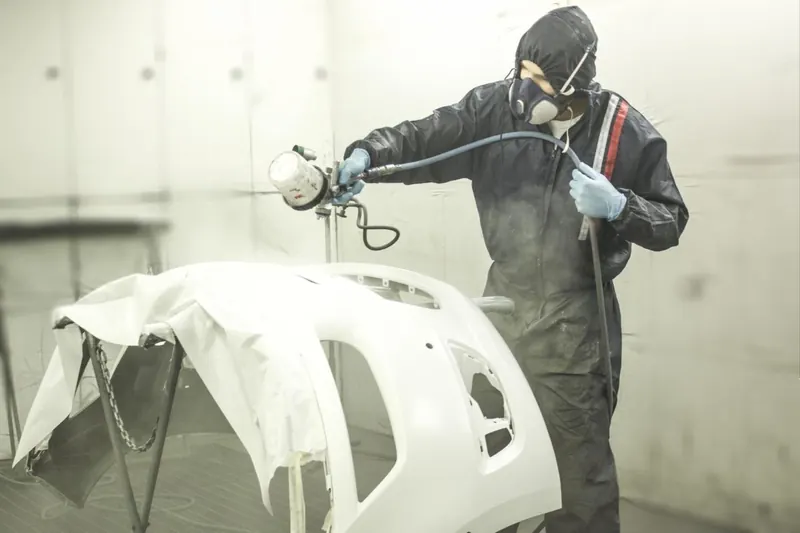
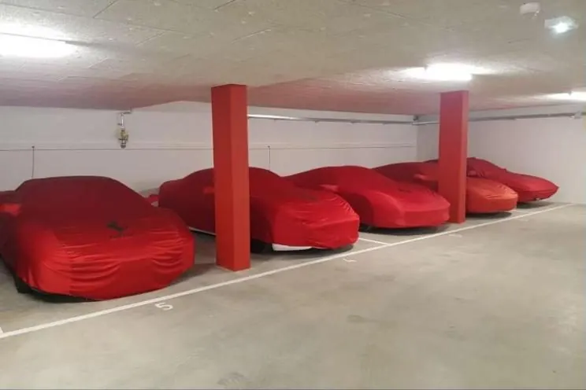
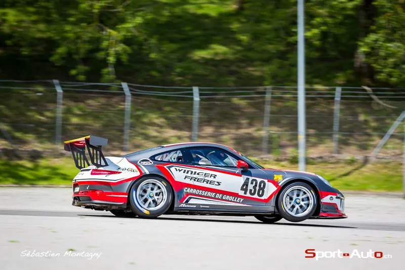
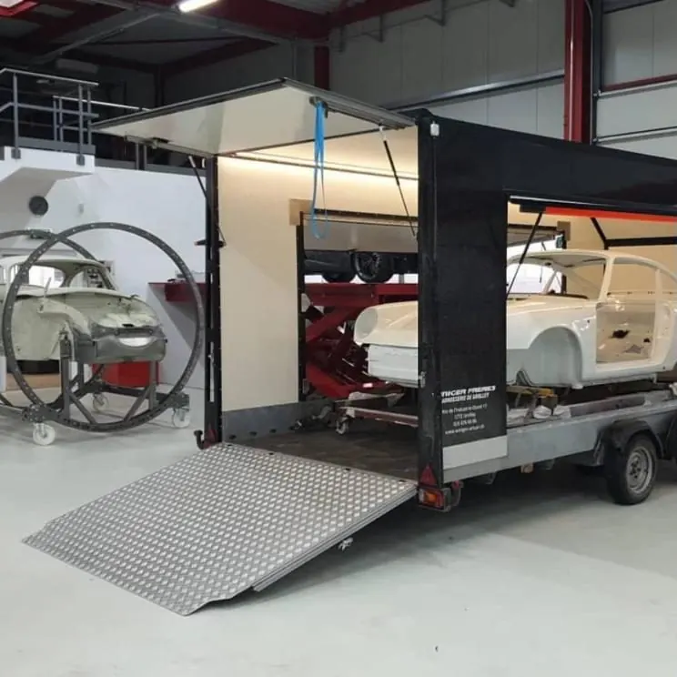
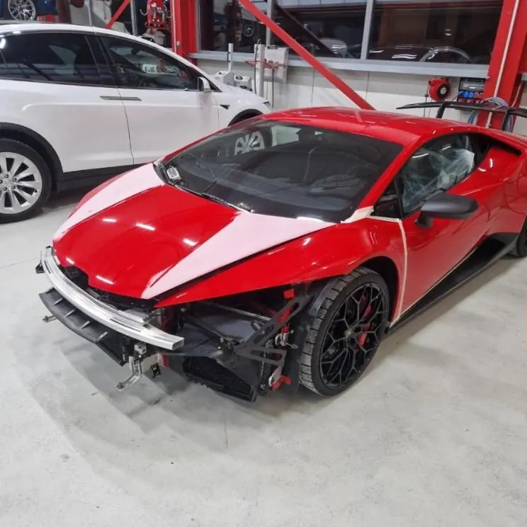

Maquette 3D conceptuelle · disposition intérieure indicative
Glisser : tourner · Molette ou pincement : zoomer · Clic droit ou deux doigts : déplacer · Repères : aller à un espace
Atelier : carrosserie et peinture
Réparation toutes marques, débosselage, vitrage, peinture en cabine. Atelier agréé Tesla depuis mai 2021.
Voir ce chapitreStations de lavage
Un lavage manuel haute pression et un lavage automatique, paiement par carte ou Twint.
Voir ce chapitreWiniger Frères · Carrosserie de Grolley · depuis 2004
Carrosserie, peinture, restauration et gardiennage.
Un atelier familial à Grolley, pour les voitures de tous les jours comme pour les véhicules de prestige et de collection.
Faites défiler : le bâtiment s'ouvre espace par espace. Faites glisser pour tourner, cliquez sur un espace pour y aller.
Faites défiler : l'atelier, espace par espace, en photos réelles.
Toutes les photos sont réelles, prises à l'atelier ou en course. La maquette 3D du bâtiment est une représentation conceptuelle : volumes d'après les photos publiques, aménagement intérieur indicatif.
Affichage :

01Carrosserie
Carrosserie et peinture, toutes marques.
Du petit choc au sinistre important, jusqu'aux véhicules de prestige. Membre du réseau Tesla Approved Body Shop depuis mai 2021.
01 / 05
Prise en charge et devis
Le devis est gratuit. L'atelier peut prendre en charge votre véhicule sur le lieu de votre choix et vous raccompagner à domicile ou au travail.
02 / 05
Sinistre et assurance
L'atelier vous accompagne dans l'annonce et la gestion du sinistre avec votre assurance. Une voiture de remplacement récente peut vous être prêtée.
Urgence : WhatsApp 079 457 00 37
03 / 05
Carrosserie
Tous travaux de carrosserie, débosselage, remplacement de pare-brise, de lunette arrière et de vitres latérales, remplissage de climatisation.
04 / 05
Peinture en cabine
De la retouche à la teinte complète, y compris la peinture mate et la peinture des véhicules anciens.

05 / 05
Restitution
Le véhicule vous est rendu prêt à reprendre la route. Qualité garantie FCR.
02Gardiennage
Gardiennage au sous-sol.
Pour les véhicules de collection, de prestige, de sport ou de compétition, quand la place manque ou pour un hivernage.
01 / 03
Un sous-sol chauffé
Un espace moderne et sécurisé, réservé au gardiennage des véhicules.

02 / 03
Accès par ascenseur
Le véhicule descend au sous-sol par ascenseur, sans rampe à négocier.
03 / 03
Du mois à l'année
Votre véhicule vous est restitué en parfait état, nettoyé à l'intérieur comme à l'extérieur. Le tarif vous est communiqué sur demande.
03Restauration
Restauration, jusqu'aux parties que l'on ne voit pas.
Oldtimers et youngtimers. Dossier en cours depuis août 2026 : une Porsche 911.
01 / 04
La caisse sur rotissoire
La caisse est fixée sur une rotissoire : elle pivote pour rendre chaque recoin accessible, dessous compris.

02 / 04
Le masquage
Avant la peinture, les zones à protéger sont masquées avec soin.
03 / 04
Les intérieurs en apprêt
L'habitacle et les parties intérieures reçoivent leur apprêt en cabine.
04 / 04
Le soubassement
Grâce à la rotissoire, le soubassement est peint comme le reste de la caisse.
04Compétition
Le n° 438 en piste.
Une Porsche 911 court aux couleurs de Winiger Frères, Carrosserie de Grolley. Même exigence de finition qu'à l'atelier.
01 / 01
La voiture
Porsche 911, numéro 438, livrée Winiger Frères. Le modèle 3D est une représentation simplifiée, d'après les photos de course.

05Lavage
Station de lavage, chez les Frères Winiger.
À deux pas de la carrosserie, à Grolley : un lavage manuel haute pression et un lavage automatique.
01 / 03
Lavage manuel haute pression
Une station de lavage manuel haute pression, sous auvent, en face de la carrosserie.
02 / 03
Lavage automatique
Une station de lavage automatique, dans un local fermé au bout du bâtiment voisin : on entre côté cour et on ressort tout droit de l'autre côté.
03 / 03
Carte ou Twint
Les deux stations acceptent le paiement électronique. Horaires et tarifs : renseignez-vous auprès de l'atelier au 026 476 06 06.
Sources : publication de l'atelier du 22 août 2026 et indications de l'atelier (novembre 2026).
06Histoire
Deux frères, un atelier qui grandit.
Une carrosserie familiale, fondée et dirigée par Richard et Fabrice Winiger, membre de carrosserie suisse et entreprise formatrice.
01 / 03
2004
Richard et Fabrice Winiger fondent la carrosserie à Grolley.

02 / 03
2021
En mai, l'atelier rejoint le réseau Tesla Approved Body Shop.
03 / 03
2026
Agrandissement du bâtiment, avec une nouvelle réception et un showroom. La charpente est en cours de montage ; sa position dans la maquette est indicative.
07Réalisations
Sorties d'atelier.
Photos réelles de travaux récents. Toutes les nouvelles sur Instagram

01Lamborghini HuracánBloc avant, janvier 2026 02MazdaPeinture en cabine, juillet 2026 
03Porsche 911Soubassement repeint, 2026 
04Tesla Model 3Réparation, atelier agréé Tesla 
05Porsche 993Remise en état, livrée en février 2023 
06PréparationPièces prêtes pour la cabine 
07RestaurationDépart chez son propriétaire, décembre 2020 
08Lamborghini HuracánBloc avant démonté
08Contact
Passez à l'atelier.
Adresse
Winiger Frères Sàrl
Route de l'Industrie-Ouest 11
1772 Grolley
Horaires
- Lundi à jeudi7 h – 12 h, 13 h 30 – 18 h
- Vendredi7 h – 13 h 30